计算机组成原理
基础概念：
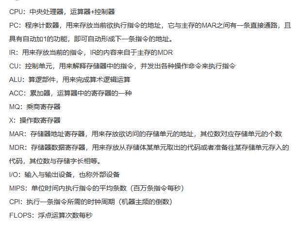
多级层次结构的计算机系统：
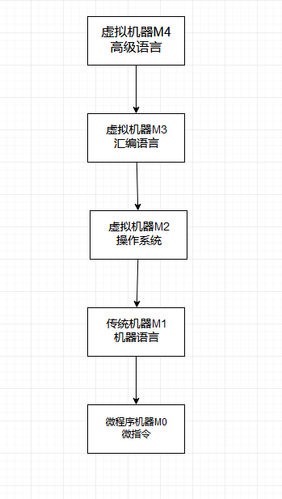
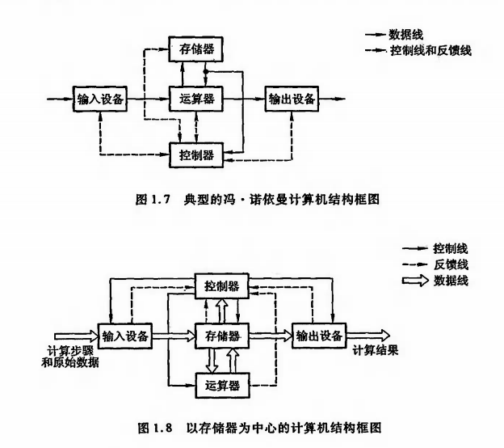
图中各部件的功能：
运算器用来完成算术运算和逻辑运算，并将运算的中间结果暂存在运算器中
存储器用来存放数据和程序
控制器用来控制，指挥程序和数据的输入，运行以及处理运算结果
输入设备用来将人们熟悉的信息形式转换为机器能识别的信息形式，常见的有键盘，鼠标等
输出设备可将机器运算结果转换为人们熟悉的信息形式，如打印机输出，显示器输出等
计算机工作过程：
细化的计算机组成：

主存储器（主存或内存）包括存储体M，各种逻辑部件及控制电路等
主存的主要工作方式就是按存储单元的地址号来实现对存储字各位的存（写入），取（读取）。此类读取方式也被称为地址存取方式，即按地址访问存储器（访存）。
MAR是存储器地址寄存器，用来存放想要访问的存储单元的地址，其位数对应存储单元的个数。（若MAR为10位，则有2^10=1024个存储单元，记为1K）。
MDR是存储器数据寄存器，用来存放从存储体某单元取出的代码或者准备往某存储单元存入的代码，其位数与存储字长相等。
运算器最少包括3个寄存器（通用寄存器组）和一个算术逻辑单元(ALU)。其中ACC位累加器，MQ为乘商寄存器，X为操作数寄存器。这3个寄存器在完成不同运算时，所存放的操作数类别也各不相同。
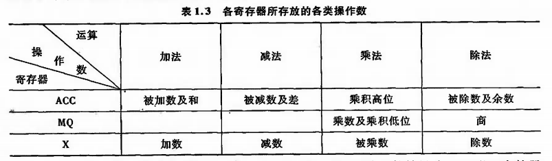
控制器指挥各部件自动，协调地工作。具体而言，它首先要命令存储器读出一条指令，称为取指过程（同取指阶段）。接着，对这条指令进行分析，之处该指令要完成什么样操作，并按寻址特征指明操作数的地址，称为分析过程（同分析阶段）。最后根据操作数所在的地址以及指令的操作码完成某种操作，称为执行过程（同执行阶段）
以上也就是完成指令操作的取指，分析和执行3个阶段
控制器由程序计数器(PC)，指令寄存器(IR)，以及控制单元(CU)组成。PC用来存放想要执行指令的地址，它与主存的MAR之间有一条直接通路，且具有自动+1的功能，即可自动形成下一条指令 的地址。IR用来存放当前的指令，IR的内容来自主存的MDR。IR中的操作码(OP(IR))送至CU，记作OP(IR)->CU，用来分析指令；其地址吗(Ad(IR))作为操作数的地址送至存储器的MAR，记作Ad(IR)->MAR。CU用来分析当前指令所需完成的操作，并发出各种微操作命令序列，用以控制所有被控对象。
I/O子系统包括各种I/O设备机器相应的接口。每一种I/O设别都由I/O接口与主机联系，它接收CU发出的各种控制命令并完成相应的操作。例如，键盘（输入设备）由键盘接口电路与主机联系；打印机（输出设备）由打印机接口电路与主机联系。
四则运算计算过程
设：M表示存储器的任一地址好，[M]表示对应M地址号单元中的内容；X表示X寄存器，[X]表示X寄存器中的内容；ACC表示累加器，{ACC}表示累加器中的内容；MQ表示乘商寄存器，[MQ]表示乘商寄存器中的内容。
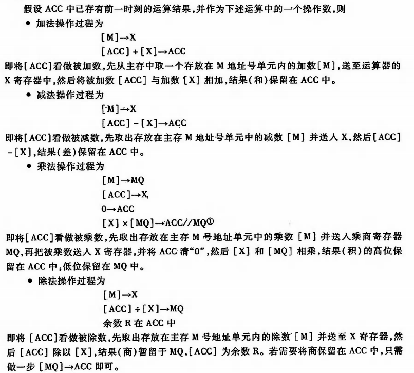
其中//表示两个寄存器串联
存储容量
主存容量是指主存中存放二进制代码的总位数。即
存储容量 =存储单元个数x存储字长
例如：MAR为16位，根据2^16=65536，表示此存储体内有65536个存储单元（即64K存储字，1K=1024=2^10），而MDR位32位，表示存储容量位2^16*32=x^21=2M位
系统总线
分散连接：计算机系统各部件之间使用单独的连线，
总线连接：计算机系统各部件连到一组公共信息传输线上
?>分散连接的缺点:1.内部连线复杂 2.当I/O与存储器交换信息时，都需经过运算器，致使运算器停止运算，影响CPU工作效率
?>总线连接的缺点：1.当多个部件与总线连接时，如果出现两个及以上部件同时向总线发送消息，会导致信号冲突，传输无效，因此同一时间只允许一个部件向总线发送消息，但多个部件可以同时从总线上接收相同的信息
!>传输线与二进制代码的关系:16条传输线组成的总线可同时传输16位二进制代码
下图是以CPU为中心的双总线结构：
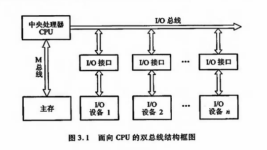
其中一组总线连接CPU和内存，称为存储总线（M总线）；另一组用来建立CPU和和各I/O设备之间交换信息的通道，称为输入/输出总线（I/O总线）；此结构能将I/O设备通过I/O接口挂到总线上，因此方便增删设备，但是这种结构在I/P设备与主存交换信息时仍要占用CPU，因此会影响CPU的工作效率
若将CPU，主存和I/O设备（通过I/O接口）都挂到一组总线上，就形成了单总线结构，如下图所示：
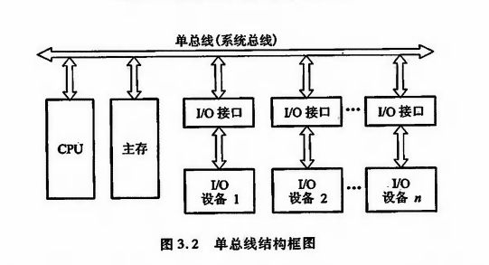
此总线结构的特点是当I/O设备与主存交换信息时，原则上不影响CPU的工作，CPU仍可继续处理不访问主存或I/O设备的操作，因此CPU的工作效率有所提升。但是总线只有一条，冲突仍无法避免，因此需设置总线判优逻辑，让各部件按优先级高低来占用总线，但即使如此，也会影响整机的工作速度
因此更进一步以存储器为中心的双总线结构，减缓了以上的冲突：
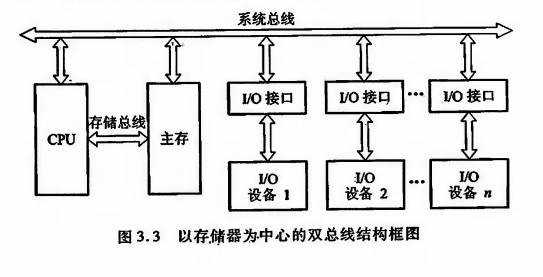
他在单总线的基础上又开辟出一条CPU与主存之间的总线，称为存储总线。这组总线速度高，且只供主存与CPU之间传输消息。因此提高了传输效率，且减轻了系统总线的负担
总线的分类
片内总线：指芯片内部的总线，如在CPU芯片内部，寄存器和寄存器之间，寄存器与算逻单元ALU之间均是由片内总线连接
系统总线
系统总线是指CPU，主存，I/O设备各大部件之间的信息传输线。由于这些部件通常安插在主板或各个插件版上，故又称板级总线或板间总线
按系统总线传输信息的不同，又可分为三类：数据总线，地址总线和控制总线
1.数据总线：
数据总线用来传输各功能部件之间的数据信息，它是双向传输总线，其位数与机器字长，存储字长有关（一般为8,16,32位）。数据总线的位数又称为数据总线宽度。CPU在取指阶段访问内存的次数=指令长度/数据总线宽度
2.地址总线：
地址总线主要用来之处数据总线上的源数据或目的数据在内存单元的地址或I/O设备的地址。例如：想要从存储器读出数据，则CPU要将此数据所在存储单元的地址送到地址线上。又如：欲将某数据经I/O设备输出，则CPU除了需要将数据送到数据总线外，还需将该输出设备的地址送到地址总线上。总结：地址总线上的代码是用来指明CPU想要访问的存储单元或I/O端口的地址，由CPU输出，单向传输。地址线的位数与存储单元的个数有关，如地址线线20根，则对应的存储单元个数为2^20
3.控制总线：
由于数据总线，地址总线都是被挂在总线上的所有部件共享的，如何使各部件能在不同时刻占有总线使用权，需依靠控制总线来完成，因此控制总线是用来发出各种控制信号的传输线。通常对任一控制线而言，他的传输的单向的。例如，存储器读/写命令或I/O设备读/写命令都是由CPU发出的。但对于控制总线总体而言，也可以是双向的。例如当设备准备就绪时，便向CPU发中断请求；当某部件准备就绪时，向CPU发送的中断请求，当某部件需获得总线使用权时，也向CPU发出总线申请。此外，控制总线还起到监控各部件状态的作用。对CPU而言，控制信号既有输出，又有输入
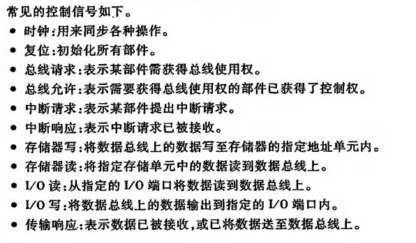
通信总线
这类总线用于计算机系统之间或计算机系统与其他系统之间的通信。由于这类联系设计许多方面，如外部连接，距离远近，速度快慢，工作方式等，差别很大，因此通信总线的类别很多，但按传输方式是可分为两种：串行通信和并行通信
一条信息的各位数据被逐位按顺序传送的通讯方式称为串行通讯。串行通讯的特点是：数据位传送，传按位顺序进行，最少只需一根传输线即可完成，成本低但送速度慢。串行通讯的距离可以从几米到几千米。 根据信息的传送方向，串行通讯可以进一步分为单工、半双工和全双工三种。信息只能单向传送为单工；信息能双向传送但不能同时双向传送称为半双工；信息能够同时双向传送则称为全双工。 串行通讯又分为异步通讯和同步通讯两种方式。在单片机中，主要使用异步通讯方式。
串行通讯中，两个设备之间通过一对信号线进行通讯，其中一根为信号线，另外一根为信号地线，信号电流通过信号线到达目标设备，再经过信号地线返回，构成一个信号回路。
并行通讯中，基本原理与串行通讯没有区别。只不过使用了成倍的信号线路，从而一次可以传送更多bit的信号。
并行通讯通常可以一次传送8bit、16bit、32bit甚至更高的位数，相应地就需要8根、16根、32根信号线，同时需要加入更多的信号地线。比如传统的PATA线路有40根线，其中有16根信号线和7根信号地线，其他为各种控制线，一次可以传送2Byte的数据。并行通讯中，数据信号中无法携带时钟信息，为了保证各对信号线上的信号时序一致，并行设备需要严格同步时钟信号，或者采用额外的时钟信号线。
通过串行通讯与并行通讯的对比，可以看出：串行通讯很简单，但是相对速度低；并行通讯比较复杂，但是相对速度高。更重要的是，串行线路仅使用一对信号线，线路成本低并且抗干扰能力强，因此可以用在长距离通讯上；而并行线路使用多对信号线（还不包括额外的控制线路），线路成本高并且抗干扰能力差，因此对通讯距离有非常严格的限制。
总线特性及其性能指标
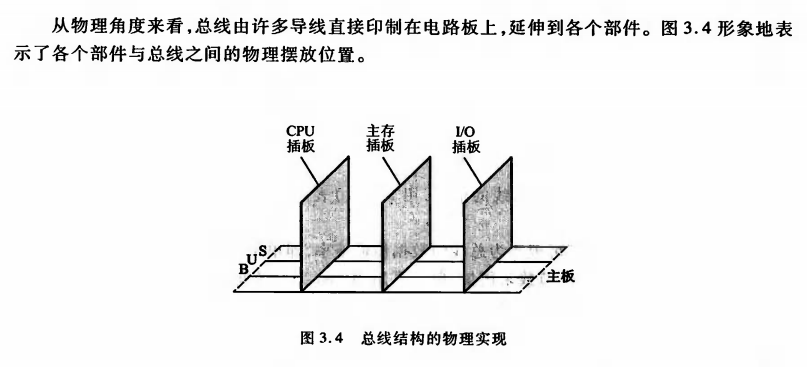
CPU，主存，I/O这些插板通过插头与水平方向总线插槽连接。为了保证机械上的可靠连接，必须规定其机械特性；为了确保电器上正常连接，必须规定其电气特性；为保证正确地连接不同部件，还需规定其功能特性和时间特性。
总线特性包括以下几项：
1.机械特性：机械特性是指总线在机械连接方式上的一些性能，如插头与插座使用的标准，他们的几何尺寸，形状，引脚的个数以及排列的顺序，接头处的可靠接触等
2.电气特性：电气特性是指总线的每一根传输线上信号的传递方向和有效的电平范围。通常规定由CPU发出的信号为输出信号，送入CPU的信号为输入信号。例如：地址总线为单向输出线，数据总线属于双向传输线，他们都定义为高电平为1，低电平为0.控制总线的每一根都是单向的，但从整体看有输入也有输出
3.功能特性：功能特性是指总线中每根线的功能，例如：地址总线用来指出地址码；数据总线用来传递数据；控制总线发出控制信号。
4.时间特性：指总线中任一根线在什么时间内有效
总线性能指标
1.总线宽度：通常是指数据总线的根数，用bit（位）表示，如8，16，32，64位等（8，16，32，64根）
2.总线带宽：总线带宽可理解为总线的数据传输速率，即单位时间内总线上传输数据的位数，通常用每秒传输信息的字节数来衡量，单位用MBps表示。例如，总线工作频率为33MHZ，总线宽度为32位（4bits），则总线带宽为33*32/8=132MBps
3.时钟同步/异步：总线上的数据与时钟同步工作的总线称为同步总线，与时钟不同步工作的总线称为异步总线
4.总线复用：一条信号线上分时传送两种信号。例如，通常地址总线传输地址码，数据总线传输数据信息
5.信号线数：地址总线，数据总线和控制总线三种总线的总和
6.总线控制方式：包括突发工作，自动配置，仲裁方式，逻辑方式，技术方式等
总线标准
PCI总线（代表性举例）优点：
1.高性能，支持突发工作方式（若被传送的数据在主存中连续存放，则在访问此组数据时，秩序给出第一个数据的地址，占用一个时钟周期，其后每个数据的传送各占一个时钟周期，而不必每次给出各个数据的地址），因此能提高传输效率
2.有良好的兼容性：PCI总线部件和插件接口相对于处理器是独立的
3.支持即插即用：PCI设备中配有存放设备具体信息的寄存器，这些信息能自动配置PCI总线部件和插件
4.支持多主设备能力：主设备对总线有控制权的设备，PCI允许任何主设备和从设备之间实现点对点对等存取
5.具有与处理器和存储子系统完全并行操作的能力。
6.提供数据和地址奇偶校验功能，保证数据的完整和准确
7.支持两种电压标准：5V和3.3V
8.可扩展性好：当PCI总线驱动能力不足时，可以采用多层结构
9.软件兼容性好
10.采用多路复用技术：减少总线引脚个数
USB总线：
1.具有真正即插即用的特征
2.具有很强的连接能力
3.数据传输率高
4.标准统一
5.连接电缆轻巧，电源体积小
6.生命力强
总线结构
多总线结构：
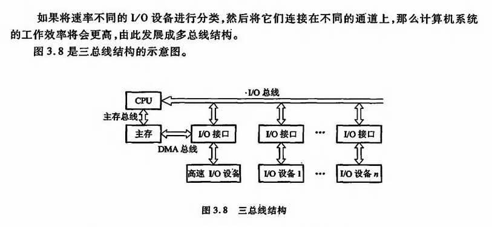
主存总线用于CPU和内存之间的传输；I/O总线供CPU与各类I/O设备之间传递信息；DMA总线用于高速I/O设备与主存之间直接交换信息，但在任一时刻只能使用一种总线。主存总线与DMA总线不能同时对主存进行存取，I/O总线只有在CPU在执行I/O命令时才能用到。
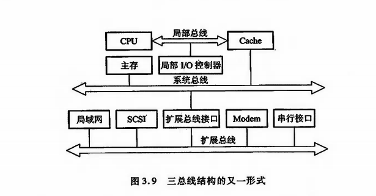
处理器与Cache之间有一条局部总线，他将CPU与Cache或与更多的局部设备连接。Cache的控制机构不仅将Cache连到局部总线上，而且还直接连到系统总线上，这样Cache就可用过系统总线与主存传输信息，而且I/O设备与主存之间的传输不必通过CPU，还有一条扩展总线，它将局域网，小型计算机接口，调制解调器以及串行接口都连接起来，并且通过这些接口可与各类I/O设备相连，因此它支持更多I/O设备。于此同时实现了扩展总线与系统总线相连，明显调高了系统的工作效率
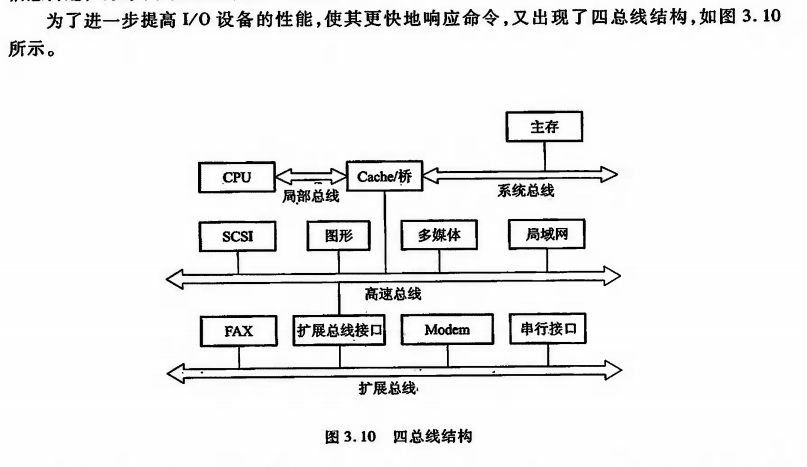
在这里增加了一条与计算机系统紧密相连的高速总线。在高速总线上挂接了高速I/O设备，他们通过Cache控制机构中的高速总线桥或高速缓冲器与系统总线和局部总线相连，使得这些高速设备与CPU更紧密。
对这种结构而言，其自身的工作很少依赖CPU，同时它们又比扩展总线上的设备更贴近CPU，对于高性能设备而言与CPU来说，各自的效率将会很大的提高。
传统微型计算机的总线结构：
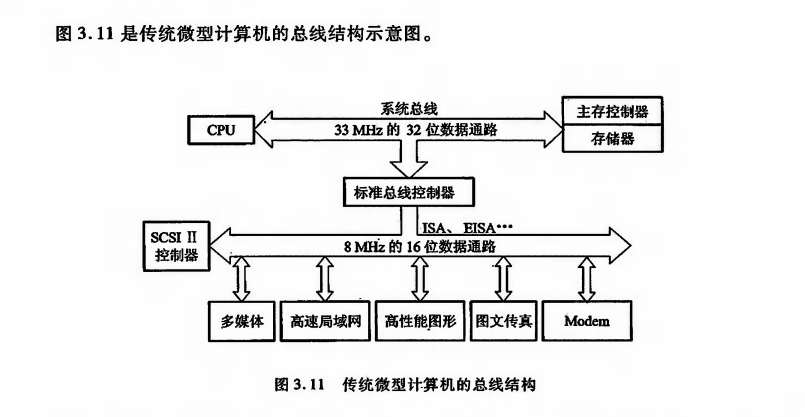
无论高速局域网，高性能图形还是低速设备都挂接在ISA或EISA总线上，并通过ISA或EISA总线控制器与系统总线相连，这样会导致性能瓶颈。只有将高速，高性能外设，尽量靠近CPU本身的总线并与CPU同步或准同步，才可能消除瓶颈问题。这就要求改变总线结构来提高数据传输速率。
因此出现了VL-BUS局部总线结构。
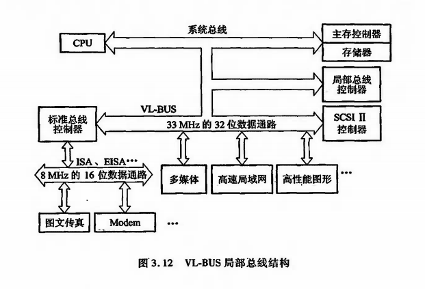
优点：将高速设备挂在局部总线VL-BUS上并与总线相连。而将低速设备连在ISA总线上，满足了高速设备的性能需求
缺点：设备与CPU的关系太紧密（适合486），因此无法支持功能更强的CPU，因此出现了PCI总线
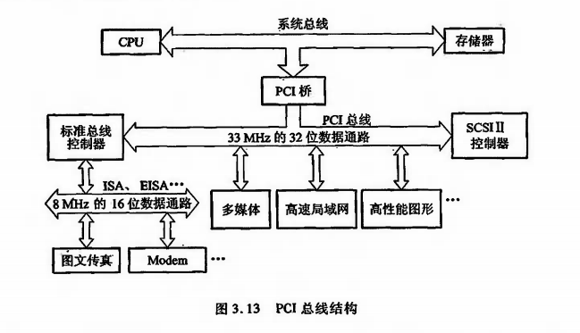
这种结构通过PCI桥使得CPU与PCI总线相互隔离，灵活且支持更多高速设备，且具有即插即用的特性。
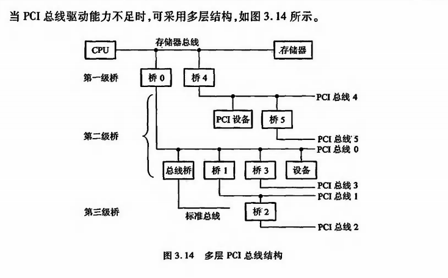
总线控制
主设备（模块）：对总线有控制权
从设备（模块）：对总线无控制权，且只能响应从主设备发来的总线命令。
总线上的信息传输由主设备启动，若多个主设备同事要使用总线时，就由总线控制器判优使用。
总线判优控制可分集中式和分布式两种，前者将控制逻辑集中在一处，后者将控制逻辑分散在与总线连接的各个部件或设备上
其中常见的几种优先仲裁方式有以下三种：
1.链式查询
图中控制总线有三根线用于总线控制（BS总线忙，BR总线请求，BG总线同意），其中总线同意信号BG是串行的从一个I/O接口送到下一个I/O接口、如果BG到达的接口有总线请求，BG信号就不再往下传，意味着该接口获得了总线使用权，并且建立总线忙BS信号。
优点：距离总线控制部件最近的设备具有最高的优先级。且只需很少的线就能按一定优先次序实现总线控制，并且容易扩展设备
缺点：对电路故障很敏感，且优先级低的设备可能很难获得请求
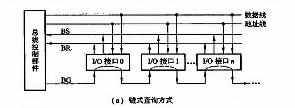
2.计时器定时查询
与链式查询相比多了一组设备地址线，少了一根总线同意线BG。总线控制部件接到由BR送来的总线请求信号后，在总线未被使用（BS=0）的情况下，总线控制部件中的计数器开始计数，并通过设备地址线，向各设备发出地址信号。当某个请求占用总线的设备地址与计数值一致时，便获得总线使用权。此时终止计数查询。
优点：可以通过排序确定设备优先级；计数可以从上一次计数终止点开始，是一种循环方法；计数器的初始值可以改变
缺点：这种方法对电路敏感程度比链式查询方法低，但增加了控制线数，控制也比较复杂
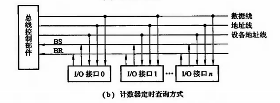
3.独立请求方式
每一台设备均有一对总线申请线BR和总线同意线BG。当需要总线时，就发出该设备的请求信号。总线控制部件中有一排队电路，可根据优先级响应请求。
优点：响应速度快，由优先次序灵活
缺点：控制线数量多，总线控制更复杂
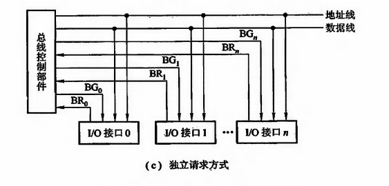
链式查询用两根线确定总线使用权。计数器查询使用log2n(底数为2)根线，而独立请求需要使用2n根线
总线通信控制
在多设备使用总线时，按各部件的优先级来解决问题。轮流交替传送。
完成一次总线操作的时间称为总线周期，且有以下四个阶段：
1.申请分配阶段：由需要使用总线的模板提出申请，经总线仲裁决定下一传送周期的总线使用权
2.寻址阶段：取得了使用权的主模块通过总线发出本次要访问的从模块的地址及有关命令，启动参与本次传输的从模块
3.传数阶段：主模块和从模块进行数据交换，数据由源模块发出，经数据总线流入目的模块
4.主模块的有关信息均从系统总线上撤除，让出总线使用权
总线通信控制主要有四种方式：同步通信，异步通信，半同步通信和分离式通信
同步通信
通信双方由统一时标控制数据传送称为同步通信。时标通常由CPU的总线控制部件发出，送到总线上的所有部件；也可以由每个部件各自的时序发生器发出，但必须由设备控制部件发出的时钟信号对他们进行同步
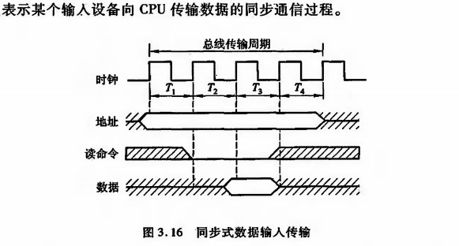
CPU在T1上升沿发出地址信息；在T2上升沿发出读命令；与地址信号相符合的输入设备按命令进行一系列内部操作，且必须在T3的上升沿到来之前将CPU所需的数据送到数据总线上；CPU在T3时钟周期内，将数据线上的信息送到其内部寄存器中；CPU在T4的上升沿撤销读命令，输入设备不再向数据总线上传送数据，撤销他对数据总线的驱动。如果总线采用三态驱动电路，则从T4起，数据总线呈浮空状态
同步通信对T1，T2，T3，T4有明确，唯一的规定
1 | 对于读命令： |
1 | 对于写命令： |
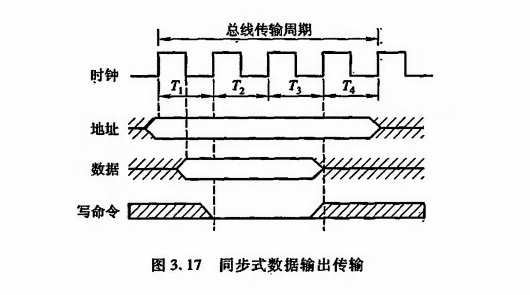
优点：规定明确，统一，模块间的配合简单一致。
缺点：主从模块时间强制性“同步”，且必须在限定时间内完成规定的要求。且对不同速度的部件而言，必须按最慢速度设置公共时钟，严重影响总线的工作效率
同步通信用于总线长度较短，各部件存取时间较一致的场所。同线传输周期越短，数据线的位数越多，直接影响总线的数据传输率。
例题：
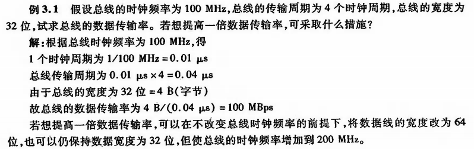
异步通讯
异步通讯允许各模块速度不一致。他不要求所有部件严格同一操作时间，二十采用应答方式（同握手方式），及当主模块发出请求信号时，需等待模块响应后，才能开始通信。因此主从模块之间需增加两条应答线（用于握手交互信号）。
异步通讯的应答方式可分为不互锁，半互锁和全互锁
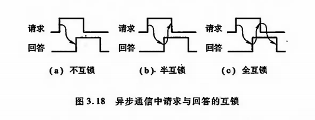
1.不互锁方式
主模块发出请求信号后，不必等待接到从模块的回答信号，而是经过一段时间，确认从模块收到请求信号后，撤销其请求信号；从模块接到请求信号后，在条件允许时发出回答信号，并且经过一段时间确认主模块已收到回答信号后，撤销回答信号。CPU向主存写入时，CPU先后给出地址信号，写命令以及写入数据，采用此方式。
2.半互锁方式
主模块发出请求信号，必须待接到从模块的回答信号后再撤销其请求信号，有互锁关系；而从模块再接到请求信号后发出回答信号，但不必等待获知主模块请求信号已经撤销，而是隔一段事件后自动撤销其回答信号，无互锁关系。在多机系统中，某个CPU访问共享存储器时，CPU发出访存命令后，必须收到存储器未被占用的回答信号，才能真正进行访存操作
3.全互锁方式
主模块发出请求信号，必须待从模块回答后再撤销其请求信号；从模块发出回答信号，必须待获知主模块请求信号已撤销后，再撤销其回答信号。因此称为全互锁。在网络通信中，通信双方采用的就是全互锁方式
异步通信可用于并行传送或串行传送。异步串行通信时，没有同步时钟，也不需要在数据传送中传送同步信号。为了确认被传送的字符，约定字符格式为：1个起始位（低电平），5-8个数据位，1个奇偶校验位（检错），1或1.5或2个终止位（高电平）。起始位至终止位构成1帧，两帧之间的间隔可以是任意长度的，下图B两帧之间无空闲位，因此数据传输率更高
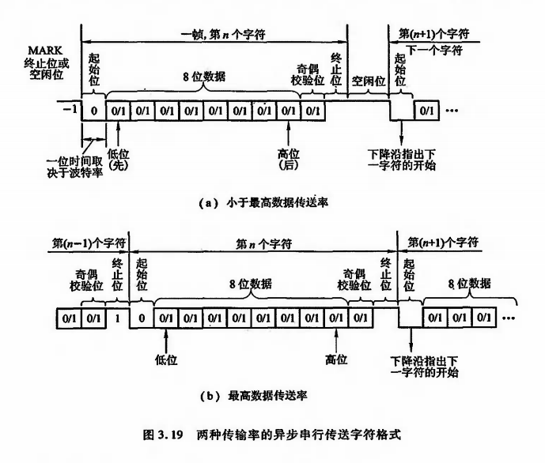
例题：
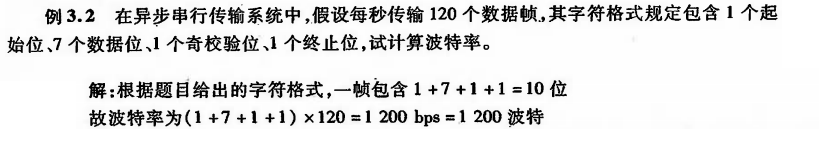
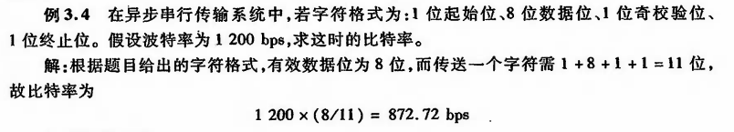
半同步通讯
半同步通讯既保留了同步通讯的特点如：所有的地址，命令，数据信号的发出时间，都严格参照系统时钟的某个前沿开始，而接收方都采用系统时钟后沿时刻来进行判断识别；同时也像异步通讯那样，允许不同速度的模块工作。因此增设了一条“等待”（WAIT）响应信号线，采用插入时钟周期的措施来协调通信双方的配合问题
以输入为例，在同步通信中，主模块在T1发出地址，在T2发出命令，在T3传输数据，在T4结束传输。倘若从模块工作速度较慢，无法在T3时刻提供数据，则必须在T3到来前通知主模块，给出WAIT（低电平）信号。若主模块在T3到来时测得WAIT为低电平，就插入一个等待周期TW，不立即从数据线上取数。若主模块在下一个时钟周期到来时刻又测得WAIT为低，就再插入一个TW等待，直到主模块测得WAIT为高电平时，主模块即把此刻的下一个时钟周期当作正常周期T3，即时获取数据，T4结束传输
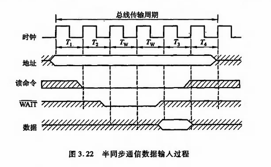
半同步通信时序可为以下形式：
1 | T1：主模块发出地址信息 |
优点：半同步通信适用于系统工作速度不高但包含了很多工作速度不同的设备组成的简单系统。半同步通信控制方式比异步通信简单，在统一的系统时钟控制下同步工作，可靠性较高，同步结构方便。
缺点：系统对时钟频率不能要求太高，因此系统工作的速度不是很高
分离式通信
基本思路：将一个传输周期分解为两个子周期。在第一个子周期中，主模块A在获得总线使用权后将命令，地址以及其他有关信息，包括该主模块的编号发送到系统总线上，并由相关的从模块B接收。发送完毕，立即放弃总线使用权。在第二个子周期中，当B模块收到A模块发来的命令后，将A模块所需数据准备好，并申请总线使用权，获准后，B模块将A模块的编号，B模块的地址，A模块所需的数据传送给A。两个传输子周期只有单方向的信息流。
通信特点：
1.各模块使用总线前需提出申请
2.得到总线使用权后，主模块在限定的时间内传送信息，采用同步方式传送，不等待对方的回答信息
3.各模块在准备数据的过程中不占用总线
4.总线被有效占用，实现模块间信息交叉重叠使用
存储器
按存储介质分类与按存取方式分类
1.按存储介质分类：
(1)半导体存储器：
存储单元由半导体器组成的存储器。采用超大规模集成电路制成芯片。
优点：体积小，功耗小，存取时间短
缺点：电源消失时，存取信息丢失(近年来在克服此缺点)
(2)磁表面存储器：
指在金属或塑料基体的表面上涂一层磁性材料作为记录介质，工作时磁层 随载磁体高速运转，用磁头在磁层上进行读/写操作。
优点：非易失性（防止数据丢失）
(3)磁芯存储器：
磁芯是由硬磁材料做成的环状元件，在磁芯中有驱动线(通电流)和读出线，以进行读/写操作。
优点：非易失性
缺点：体积大，工艺复杂，功耗大
(4)光盘存储器：
使用激光在记录介质(磁光材料)上进行读/写的存储器。
优点：非易失性，记录密度高，耐用性好，可靠性高，可互换性强
2.按存取方式分类：
(1)随机存储器(RAM)：
RAM是一种可读/写的存储器。任何一个存储单元的内容都可以随机存取，且存取时间与存储单元的物理位置无关。计算机主存采用这种随机存储器 。RAM分为静态RAM(以触发器原理寄存信息)和动态RAM(以电容充放电原理寄存信息)
(2)只读寄存器(ROM)：
只对其存储内容读出，而不能写入。常放固定不变的程序，常数，汉字字库和操作系统等 。可与随机寄存器共同作为主存的一部分，构成主存的地址域。
代表例子：闪存
(3)串行访问存储器：
在读/写操作时，需按物理位置的先后顺序寻址。因此信息位置不同时，读/写时间不同。
3.按在计算机中的作用分类
主存储器的特点是它可以和CPU直接交换信息；辅助存储器时主存储器的后援，用于存放当前不用的程序和数据，它不与CPU直接交换信息；缓冲存储器用在速度不同的部件中，CPU和主存之间设置快速缓存，起缓冲作用。
两者比较：主存速度快，容量小，每位价格高；辅存速度慢，容量大，每位价格低。
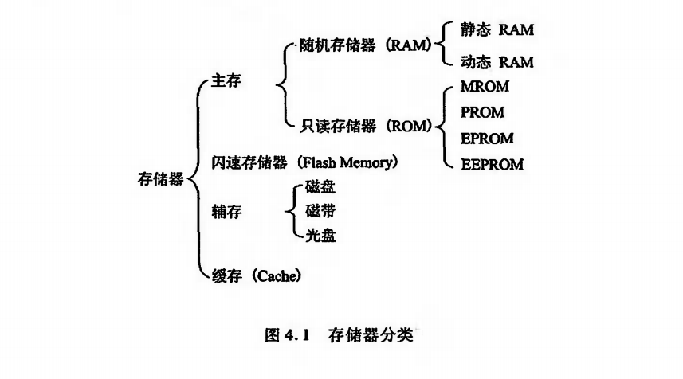
存储器的层次结构
存储器主要有三个性能指标：速度，容量和每位价格。图中由上至下，位价越来越低，速度越来越慢，容量越来越大，CPU访问的频度也越来越少。
最上层的寄存器制作在CPU芯片中，并参与CPU运算。主存用于存放将要运行的程序和数据，速度与CPU有差距，因此使用缓存(同样制作在CPU中)让他们之间的速度更好的匹配。
CPU不能直接访问辅存，辅存只与主存交换信息，因此辅存的速度可以比主存慢得多。
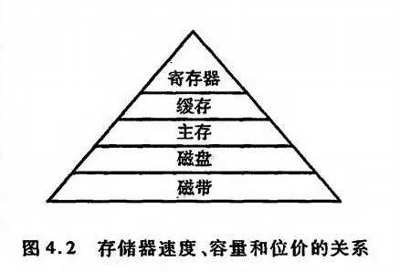
存储系统层次结构主要体现在缓存-主存和主存-辅存两个存储层次上。因此CPU和缓存，主存都能直接交换信息；缓存能直接和CPU，主存交换信息；主存可以和CPU，缓存，辅存交换信息
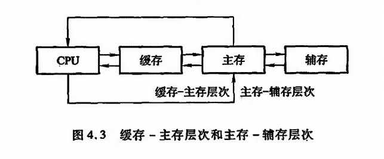
缓存-主存层次主要解决CPU和主存速度不匹配的问题。由于缓存的速度比主存的速度高。将CPU近期要用的信息调入缓存，再由CPU获取，可以提高访问速度 。但缓存容量小，需要不断将主存的内容调入。
主存-辅存层次用于解决存储系统的容量问题。辅存容量大可以存放大多数未被CPU利用的信息，但速度慢需要调入主存再使用。
主存储器
实际操作中，根据MAR中的地址访问某个存储单元时，还需经过地址译码，驱动等电路，才能找到想访问的单元。读出时，需经过读出放大器，才能将存储单元中的存储字送入MDR。写入时，MDR中的数据也需经过写入电路才能真正写入到被选中的单元中。
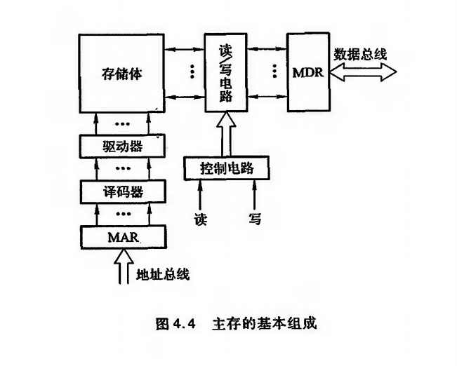
主存由半导体集成电路构成，图中的驱动器编码器和读写电路均制作在存储芯片中，MAR和MDR制作在CPU芯片中。两者可通过总线连接。
当从存储器读出信息字时，首先CPU将该字的地址送到MAR，经地址总线送至主存，然后发出读命令。主存接到读命令后，将该地址单元的内容读出。并将该单元的内容读至数据总线上。
当向主存中存入信息字时，首先CPU将该字所在主存单元的地址经MAR送至地址总线，并将信息字送入MDR，然后向主存发出写命令，主存接到写命令后，将数据线上的内容写入对应地址的主存单元。
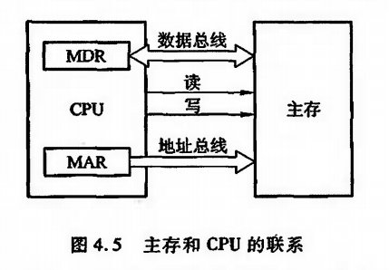
主存中的存储单元地址分配和技术指标
主存各存储单元的空间位置是由单元地址号来表示的，地址总线用以指出存储单元的地址号。不同机器存储字长不同，常用8位二进制数表示一个字节，因此存储字节都取8的倍数。计算机系统即可按字寻址，也可按字节寻址。对32位字长的IBM370机，按字节寻址时他每一个存储字包含4个可独立寻址的字节。地址分配如下。字地址时用该字高位字节的地址来表示，其字地址是4的整数倍，可使用地址码的末两位来区分 同一字的4个字节的位置。对于16位字长机而言，其字长位16位，字地址是2的整数倍，他用低位字节地址来 表示字地址。
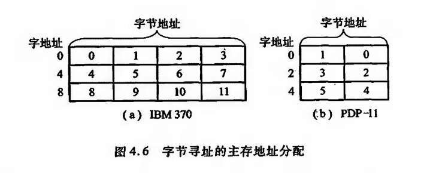
在图a，对24位地址线的主存而言，按字节寻址的范围是16M，按字寻址的范围为4M(16/4)。在图b，对24位地址线而言，按字节寻址的范围是16M，但按字寻址的范围为8M(16/2)
在计算按字寻址时需除储存字中的字节数
主存的主要技术指标是存储容量和存储速度
(1)存储容量
存储容量是指主存能存放二进制代码的总位数，即：
存储容量(b) = 存储单元个数 * 存储字长
他的容量也可以用字节总数表示，即：
存储容量(Byte) = 存储单元个数 * 存储字长/8
(2)存储速度
存储速度由存取时间和存取周期表示
存取时间称存储器的访问时间，指启动一次存储器操作到完成操作的全部时间。且分为读出时间和写入时间两种。
读出时间是从存储器接收到有效地址开始，到产生有效输出所需的全部时间。
写入时间是从存储器接收到有效地址开始，到数据写入被选中单元为止所需全部是时间。
存储周期是指存储器进行来连续两次独立的存储器操作所需的最小间隔时间
(3)存储器带宽
表示单位时间内存储器存取的信息量，单位可用字/秒或字节/秒国位/秒表示：
例：存取周期位为500ns，每个存取周期可访问16位，则他的带宽位32M位/秒
为提高存储器带宽（提高以存储器为中心的机器获得信息的传输速度）可采取以下措施：
1.缩短存取周期
2.增加存储字长，使每个存取周期可读/写更多二进制位数
3.增加存储体
半导体储存芯片
采用超大规模集成电路，在芯片内集成具有记忆功能的存储矩阵，译码驱动电路和读/写电路
译码驱动把地址总线送来的地址信号翻译成对应存储单元的选择信号，该信号在读/写电路的配合下完成对被选单元的读/写操作
读/写电路包括读出放大器和写入电路，用来完成读/写操作。
存储芯片通过地址总线，数据总线和控制总线与外部连接。
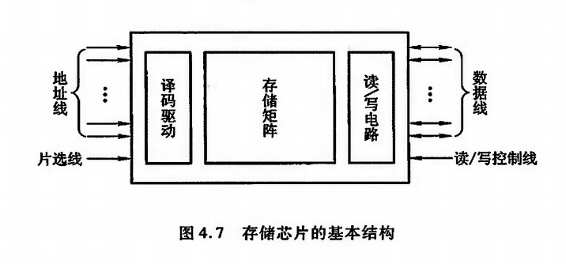
地址线单向输入，其位数与芯片容量有关；数据线是双向的，其位数与芯片可读出或写入的数据位数有关。数据线的位数与芯片容量有关。
地址线和数据线的位数共同反映存储芯片的容量。例如：地址线为10根，数据线为4根，芯片容量为2^10*4=4K位；当地址线为14根，数据线为1根，芯片容量为16K位。
控制线主要又读/写控制线与片选线两种。不同存储芯片的读/写控制线和片选线可以不同。读/写控制线决定芯片进行读/写操作，片选线用来选择存储芯片。
例如：一个64K*8位的存储器可由32片16K*1位的存储芯片组成，但每次读出存储字时，只需选中8片。
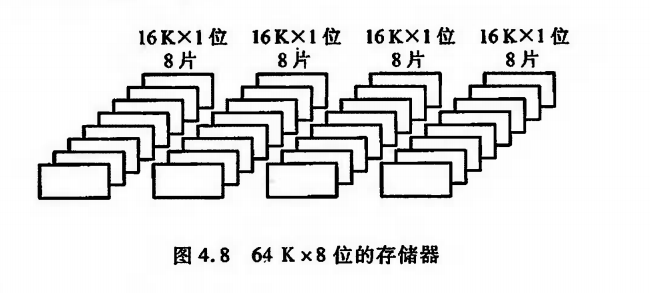
半导体存储芯片的译码驱动方式有两种：线选法和重合法。
线选法特点是使用一根字选择线，选中一个存储字单元的各位。这种方式结构简单，但只适用于容量不大的存储芯片。例子：当地址线A3A2A1A0为1111时，第15根线被选中。
重合法使用64根选择线(x,y方向各32根)，就可选择32*32矩阵中任一位。例子：当地址线全0时，译码输出x0，和y0有效，矩阵中第0行，第0列被选中。当想要构成1K*1字节的存储器时，需要8片右下图所示芯片。
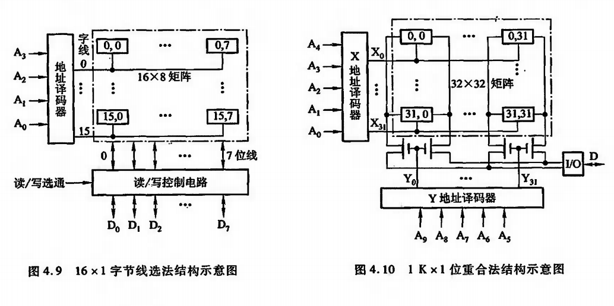
随机存取存储器
1.静态RAM
(1)静态RAM基本单元电路
存储器中用于寄存“0”和“1”代码的电路称为存储器的基本单元电路。下图是一个由6个MOS管组成的基本单元电路。图中T1~T4是一个由MOS管组成的触发器基本电路，T5，T6是开关，受行地址选择信号控制。T7，T8受列地址选择控制，分别与位线A’和A相连，它们不在基本单元电路内，而是芯片内同一列的各个基本单元电路共有。
假设触发器 已存有“1”信号(高电平)。当需读出时，需使行，列地址选择信号均有效，则使T5，T6，T7，T8均导通，A点高电平通过T6后，再由位线A通过T8作为读出放大器的输入信号，在读选择有效时，将“1”信号读出。
静态RAM是用触发器工作原理存储信息，因此即使信息读出后，它保持其原状态，不需要再生。但电源掉电时，原存信息丢失，故它属易失性半导体存储器。
写入时不论触发器原状态，只要将写入代码送至Din端，在写选择有效时，经两个写放大器，使两端输出为相反电平。当行，列地址选择有效时，使T5，T6，T7，T8导通，并将A与A’点置成完全相反的电平。这样，就把欲写入的信息写入到该基本单元电器中。例子：写入“1”，即Din=1，经过两个写放大器使位线A为高电平，位线A’为低电平，结果使A点为高，A’点为低，即写入了“1”信息。
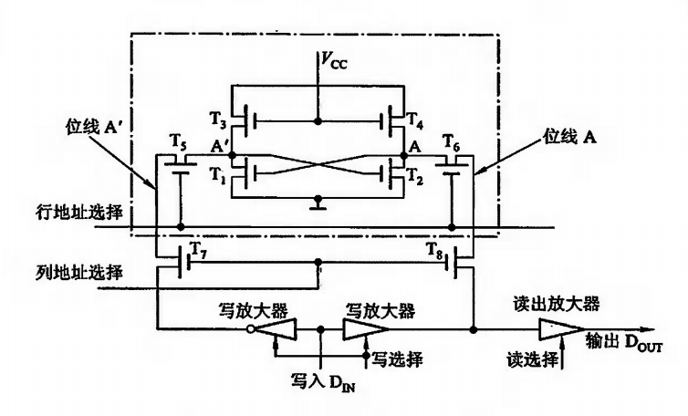
静态RAM读/写时序
(1)读周期时序
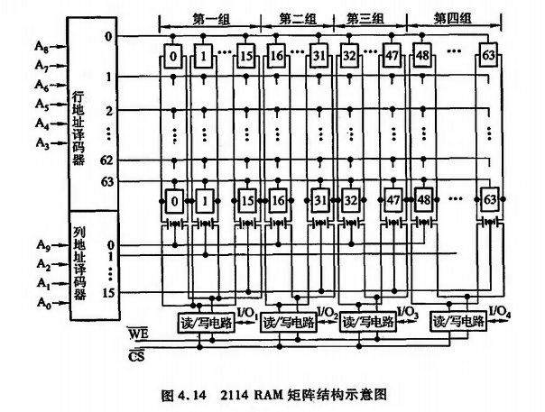
下图是2114RAM芯片读周期时序，在整个读周期中WE始终为高电平。读周期Trc是指对芯片进行两次连续读操作的最小间隔时间。读时间Ta表示从地址有效到数据稳定所需的时间，读时间小于与读周期。Tco是从片选有效到输出稳定的时间。可见只有当地址有效经Ta后，且当片选有效经Tco后，数据才能稳定输出，这两者须同时具备。根据Ta和Tco的值，知道地址有效后，经Ta-Tco时间必须给出片选有效信号，否则信号不能出现在数据线上。
从片选失效到输出高阻需一段时间Totd，地址失效后，数据线上的有效数据有一段维持时间Toha，以保证可靠的读取数据
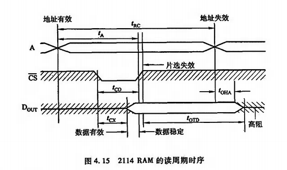
(2)写周期时序
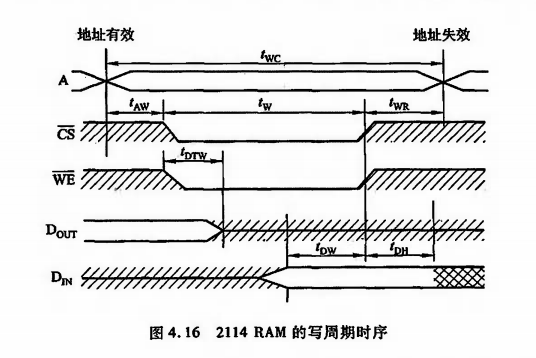
写周期Twc是芯片连续两次写操作的最小间隔时间。写周期包括滞后时间Taw，写入时间Tw和写恢复时间Twr。在有效数据出现前，RAM的数据线上存着前一时刻的数据Dout，在地址线发生变化后CS,WE均需之后Taw再有效，以避免将无效数据写入RAM。但写允许WE失效后，地址必须保持一段时间，即写恢复时间。此外，RAM数据线上的有效数据(Din)须在CS，WE失效前的Tdw时刻，并延续一段时间Tdh(此时地址线有效，Twr>Tdh)，保证数据可靠写入。
不论对存储器进行读操作还是写操作，在读周期和写周期内，地址线上的地址始终不变
动态RAM
(1)动态RAM的基本单元电路
RAM基本单元电路有三管式和单管式两种，他们都是靠电容存储电荷的原理来寄存信息。电容上存有足够多的电荷则表示存“1”，电容上无电荷表示存“0”。带内容上的电荷之恶能维持1~2ms，因此信息会自动消失。为此，必须在2ms内对其所有存储单元恢复一次原状态，这个过程称为再生或刷新。
与静态RAM相比，集成度高，功耗低。
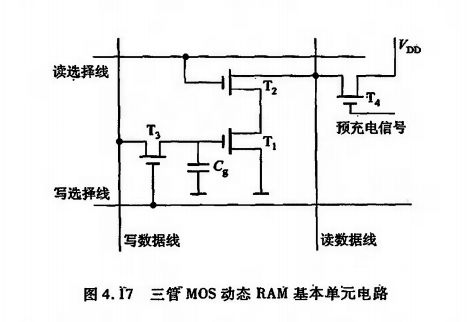
读出时，先对预充电管T4置充电信号(在存储矩阵中，每一列共用一个T4管)，使读数据线达高电平Vdd。然后由选择线打开T2，若T1的极间电容Cg存有足够多的电荷(原存“1”)，使T1导通，则因T2，T1导通接地，使读数据线降为零电平，读出“0”信息。若Cg没有足够电荷(原存“0”)，则T1截止，读数据线为高电平，读出“1”信息。
写入时，将写入信号加到写数据线上，然后写选择线打开T3，这样Cg能随输入信息充电(写“1”)或放电(写“0”)
为提高集成度，去掉T1，八信息存在电容Cs上，将T2，T3合并为T，得到单管MOS动态RAM基本单元电路。
读出时，字线上的高电平使T导通，若Cs有电荷经T管在数据线上产生电流，可视为读出“1”.若Cs无电荷，则数据线上无电流，可视为读出“0”.操作结束时，Cs的电荷释放完毕，因此是破坏性读出，须再生。
写入时，字线为高电平使T导通，若数据线上为高电平，经T管对Cs充电，使其存“1”；若数据线为低电平，Cs经T放电，使其无电荷存“0”.
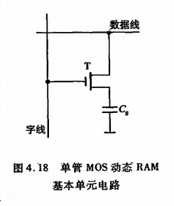
(2)动态RAM芯片举例
1.三管动态RAM芯片
这是一个1K*1位的存储芯片，图中每一小方块代表由3个MOS管组成的动态RAM基本单元电路。他们排列成32*32的矩阵，每列有一个刷新放大器和一个预充电管，芯片又10根地址线，采用重合法选择基本单元电路。
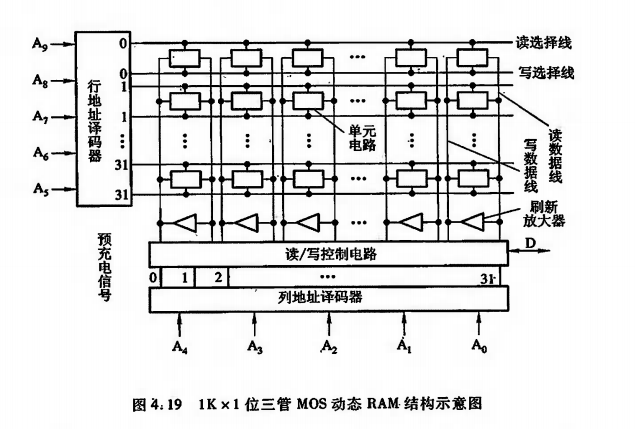
读出时，先置预充电信号，接着行地址A9~A5经行译码器给出读选择信号，同时由列地址A4~A0经列译码器给出列选择信号。只有在行，列选择信号共同作用下的基本单元电路，才能将信息经读数据线送到读/写控制电路，并从数据线D输出。
写入时，在受行地址控制的行译码器给出的写选择信号的作用下，选中芯片的某一行，并在列地址的作用下，由列译码器的输出控制读/写控制电路，只将数据线D的信息送到被选中的列的写数据线上，信息即被写入行列共同选中的基本单元电路。
2.单管动态RAM芯片
这是一个16K*1位的存储芯片，为了减少芯片封装的引脚数，地址线从14根减至7根。因此地址信息先将7位行地址送到行地址缓存器，再将7位列地址保存到列地址缓存器中。芯片内有时序电路，它受行地址选通RAS，列地址选通CAS,以及写允许信号WE,控制。
16K*1位的存储芯片共有16K个单管MOS基本单元电路，他们排列成128*128的矩阵。行线即图4.18中的字线，列线即图4.18中的数据线。128行分布在读放大器的两侧（左侧为0~63行，右侧为64~127行）。每根行选择线与128个MOS管栅极相连。128列共有128个读放大器，他的两侧又分别与64个MOS管相连，没跟列线上有一个列地址选择管。128个列地址选择管的输出又相互并接在一起与I/O缓冲器相连，I/O缓冲器的一端接输出驱动器，可输出数据；另一端接输入器，供数据输入。
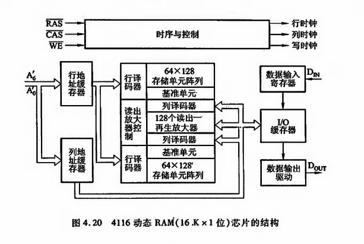
读出时，行列地址受RAS和CAS控制，分两次分别存入行，列缓存器。行地址经行译码后选中一行，使该行上所有的MOS管均导通，并分别将其电容C上的电荷反映到128个读放大器的某一侧（0~63行反映到读放大器的左侧，64~127行反映到读放大器的右侧）。读放大器的工作原理类似于一个触发器，使其两侧电平相反。列地址经列译码后选中某一列，该列上的列地址选择管导通，即可将读放大器右侧信号经读/写线，I/O缓冲器输出至Dout端。
写入时，行，列地址也要分别送入芯片内的行，列地址缓存器，经译码可选中某行，某列。出入信息Din通过数据输入其，经I/O缓冲器送至读/写线上，但只有被选中的列地址选择管导通，可将读/写线上的信息送至列的读放大器右侧，破坏读放大器的平衡，使读放大器的右侧与输入信息相同，左侧与输入信息反向，读放大器的信息就可写入到选中行的C中。
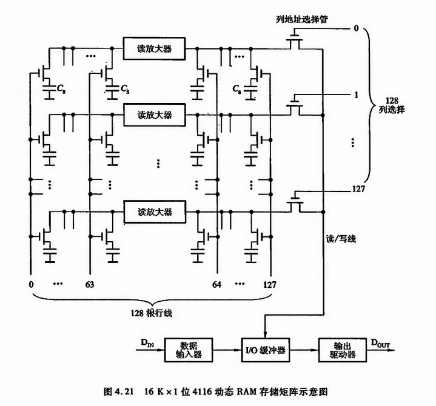
3.动态RAM时序
动态RAM的行，列地址是分别传送的，因此分析时序时，需要注意RAS和CAS与地址的关系，即：
·先由RAS将行地址送入行地址缓存器，再由CAS将列地址送入列地址缓存器，因此CAS滞后于RAS的时间必须要超过其规定值
·RAS和CAS正，负电平的宽度要大于规定值，以保证芯片内部正常工作。
·行地址对RAS的下降沿以及列地址对CAS的下降沿应有足够的地址建立时间和地址保持时间，以确定行，列地址均能准确写入芯片。
（1）读时序
在读工作方式时（写允许WE=1），读工作周期是指动态RAM完成一次“读”所需的最短时间Tcro，也是RAS的一个周期。为了确保读出数据无误，要求写允许WE=1在列地址送入前（CAS下降沿到来前）建立，而WE=1的撤除应在CAS失效后（CAS上升沿后）；还要求读出数据应在RAS有效后的一段时间Tras且CAS有效后一段时间Tcas时出现，而数据有效的撤出时间应在CAS失效后一段时间Tcas-out。
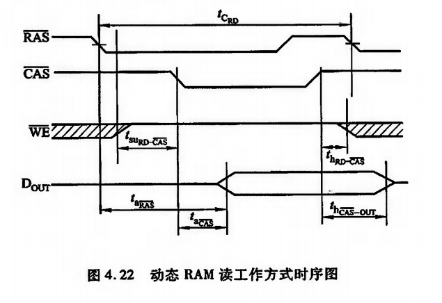
（2）写时序
在写工作方式时（写允许WE=0），RAS的一个周期Tcwn记为写工作周期。
为了确保写入数据准确无误，WE=0应先于CAS=0，
而且数据的有效存在时间应与CAS及WE的有效相对应，即写入数据应在CAS有效前的一段时间Tdin-cas出现，保持时间为CAS有效后的一段时间Tdin-cas，这是因为数据的写入实际上是由CAS的下降沿激发而成的。为了保证正常写入，WE，CAS有效均要大于数据Din有效的时间。
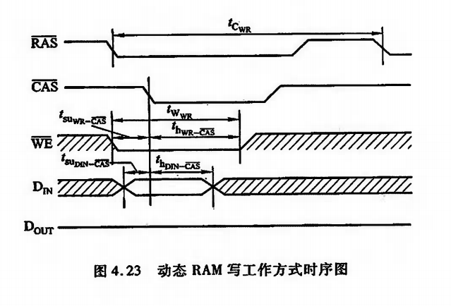
4.动态RAM刷新
刷新的过程实质上是先将原存信息读出，再由刷新放大器形成原信息并重新写入的过程。
由于存储单元被访问时随机的，可能某些存储单元长期未访问，不进行存储器的读/写操作，其存储单元内的原信息将会缓慢消失。为此，采用定时刷新的方法，规定在一定的时间内，对动态RAM的全部基本单元电路做一次刷新，一般取2ms，这个时间称为刷新周期或再生周期。刷新按行进行，必须在刷新周期内，由专用的刷新电路来完成对基本单元电路的逐行刷新，才能保证动态RAM内的信息不丢失。通常有三种刷新方式：集中刷新，分散刷新和异步刷新。
(1)集中刷新
在规定的一个刷新周期内，逐行刷新且必须停止读/写操作（被称为死时间）。
例子：存取周期为0.5us，刷新周期为2ms，对128行刷新要64us其余的1936us用来读/写或维持信息。（快到两秒时暂停读取操作进行刷新）
死时间所占比率为：128/4000=3.2%（按存储周期算）
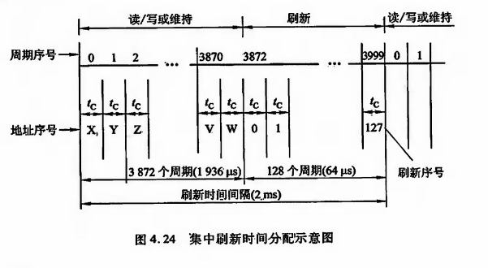
(2)分散刷新
指对每行存储单元的刷新分散到每个存取周期内完成（完成读写操作后刷新）。可把机器的存取周期T=Tw(读、写或维持信息)+Tr(刷新)。
例子：读/写周期为0.5us，则存取周期为1us，以128*128的矩阵芯片为例，128us即可全部刷新，且不存在停止操作导致的死时间。但存取周期长了，系统速度下降。
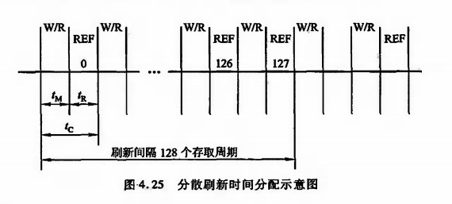
(3)异步刷新
全体以2ms为刷新周期，下一次刷新循环到这一行，需要128次刷新周期。
异步刷新间隔为2ms（固定不变），在2ms内对128行个刷新一遍，即每个15.6us刷新一行，对每行而言刷新时间仍为0.5us，刷新间隔为2ms，而每行死时间变为0.5us。
而且将动态RAM的刷新安排在CPU对指令的译码阶段(此时CPU不访问存储器)，克服了分散刷新独占0.5us刷新从而使周期加长的缺点，又不会出现集中刷新中的死区问题。
动态RAM和静态RAM
动态RAM的应用比静态RAM广泛，动态RAM的优点：
1.动态RAM的集成度远高于静态RAM。
2.动态RAM行，列地址按先后顺序输送，减少了芯片引脚，封装尺寸。
3.动态RAM的功耗比静态RAM小
4.动态RAM的价格比静态RAM的价格偏移。
动态RAM的缺点：
1.使用动态原件（电容），速度比静态RAM低
2.动态RAM需要再生，要配置再生电路需消耗功率。通常容量不大的高速缓冲存储器多用静态RAM实现。
只读存储器
1.掩膜ROM
下图采用重合法驱动，行列地址线分别经行列译码器，各32根行，列选择线。行列选择线交叉处可有耦合MOS管，也可没有。32各列控制管共连一个读放大器。
2.PROM
指可以实现一次性编程的只读存储器，如图为一个双极型电路和熔丝构成的基本单元电路。基极由行线控制，发射极与列线之间形成了一条熔丝。以熔断与未断区分所存信息为“1”或“0”
3.EPROM
指可擦除可编程只读存储器。可由用户对其所存信息作任意次改写。下图为由浮动栅雪崩注入型MOS管称FAMOS
在漏端D加正电压会形成一个浮动栅，阻止了源S与漏D之间的导通，此时MOS管处于“0”状态。若对D端不加正电压，此时导通处于“1”状态。
存储器与CPU的连接
1.存储容量扩展
位扩展：指增加存储字长，例如，两片1K*4位的芯片可组成1K*8位存储器。
图中两片2114的地址线A9~A0,CS和WE分别连在一起，其中一片数据线作为高4位D7~D4，另一片作为低四位D3~D0，以构成1K*8位处理器。
字扩展：指增加存储器字的数量。例如，两片1K*8位的存储芯片可组成2K*8位存储器。
将A10作为片选信号。由于存储芯片的片选输入端要求低电平有效，故当A10位低电平时，CS0，选中左边1K*8位芯片；当A10为高电平时，反相后CS1有效，选中右边1K*8位芯片。
字，位扩展：指既增加存储字的数量又增加存储字长。
每两片构成一组1K*8位存储器，四组构成4K*8位的存储器。地址线A11，A10经片选译码器得到4个片选信号CS0，CS1，CS2，CS3，分别选择其中1K*8位的存储芯片。WE为读写控制信号。
存储器与CPU连接：需要注意片与片之间的地址线，数据线和控制线的连接。
1.地址线的连接
存储芯片的容量与其地址线数相关；CPU的地址线数常比存储芯片的地址线数多。
通常将CPU地址线的低位与存储芯片的地址线相连。CPU地址线的高位或在存储芯片扩充时用，或做其他用途，如片选信号。
2.数据线的连接
CPU的数据线数与存储芯片的数据线数不一定相等。此时，须对存储芯片扩位，使其数据位数与CPU的数据线数相同。
3.读/写命令线的连接
CPU读/写命令线一般可直接与存储芯片的读/写控制端相连，通常高电平为读，低电平为写。有些CPU的读/写命令是分开的，此时CPU的读命令线与存储芯片的允许读控制端相连，而CPU的写命令线与存储芯片的允许写控制端相连。
4.片选线的连接
片选线的连接时CPU和存储芯片正确工作的关键。存储器由许多存储芯片组成，哪一片被选中取决于该存储芯片的片选控制端CS是否能接收到来自CPU的片选有效信号。
片选有效信号与CPU的访存控制信号MREQ（低电平有效）有关，只有当CPU要求访存时，才选择存储芯片。若CPU访问I/O，则MREQ为高电平，表示不要求存储器工作。此外，片选有效信号和地址有关，CPU的地址线往往多余存储芯片的地址线，故未与存储芯片连接的高位地址必须和访存控制信号共同产生存储芯片的片选信号。通常用到一些逻辑电路，如译码器及其他各种门电路，来产生片选有效信号。
5.合理选择存储芯片
指存储芯片类型和数量的选择。通常选用ROM存放系统程序，标准子程序和各类常数。RAM是为用户编程而设置的。此外还需考虑连线简单；CPU和存储芯片时序的配合，速度，负载匹配等问题。
例题：
解：先按位数画出对应的系统程序区和用户程序区
前两行对应2K（2K=2^11次方，故范围对应与A10）×8位ROM芯片，
后四行对应于2K（2K=2^11次方，故范围对应与A10）×8位RAM芯片，但只有4块1K×4位RAM芯片，因此后四行分别对应各芯片起始位点。
第三问：
首先D0-D7接2K×8位ROM芯片，D7-D4接1K×4位RAM芯片高位，D3-D0接1K×4位RAM芯片低位。WE（读写控制线接RAM芯片）；
A0-A10接2K×8位ROM芯片，A0-A9接1K×4位RAM芯片；因此只能从A11开始，A11-A13分别接A,B,C译码器输入端，A15为高电平，因此接G1；A14为低电平，因此接G2a，最后一条线由MREQ接G2b低位。
由于A13,A12,A11对应于1，0，0（二进制）因此从Y4线输出并接到2K×8位ROM芯片。RAM芯片对应于1，0，1因此从第Y5线输出并接到四个1K×4位RAM芯片，四个RAM芯片需要4/2=2个控制器，并且根据A10得出前两个1K×4位RAM芯片，对应于低电平，后两位对应于高电平，因此先接低电平至与门（区别于书上，需要先非操作），连接两个RAM芯片，再取非，一起接至另一与门，再接入RAM芯片（需要注意与答案存在不同，答案接入时用了非，猜测不影响结果）
寄存器校验与汉明码
一种编码是否具有检测能力和纠错能力，与编码的最小距离有关。编码最小距离指在一种编码系统中，任意两组合法代码之间的最少二进制位数的差异。
任何一种编码是否具有检测能力和纠错能力，与编码的最小距离有关
L-1=D+C 且 D>=C
即编码最小距离L越大，其检测错误的位数D越大，纠正错误的位数C也越大，且纠错能力恒小于或等于检错能力。
例子：设检测的二进制代码为n位，为使其具有纠错能力，需增添K位检测位，组成n+k位的代码。且新增添的检测位数k应满足：2^k>=n+k+1
因此可以求得对不同代码长度n所需的检测位的位数k：
| n | k(最小) |
|---|---|
| 1 | 2 |
| 2~4 | 3 |
| 5~11 | 4 |
| 12~26 | 5 |
| 27~57 | 6 |
| 58~120 | 7 |
设n+k位代码从左至右一次编为第1，2，3···，n+k位，而将k位检测位记作Ci(i=1,2,4,8,···)，分别安插在n+k位代码编号的第1，2，4，8···，2^k-1位上。
以下计算为配偶原则：
C1检测的小组包括：1，3，5，7，9，11，13，15···位
C2检测的小组包括：2，3，6，7，10，11，14，15···位
C4检测的小组包括：4，5，6，7，12，13，14，15···位
C8检测的小组包括：8，9，10，11，12，13，14，15···位
因此逐列，逐行进行排除可以知道哪里是错误比特。
以信息0101(B4,B3,B2,B1)为例：
应配置为C1,C2,B4,C4,B3,B2,B1
画出对应图像：
| 整体奇偶校验位 | C1 | C2 | B4 |
|---|---|---|---|
| C4 | B3 | B2 | B1 |
带入信息：
| 整体奇偶校验位 | C1 | C2 | 0 |
|---|---|---|---|
| C4 | 1 | 0 | 1 |
计算辖区，得出结果：
| 1 | 0 | 1 | 0 |
|---|---|---|---|
| 0 | 1 | 0 | 1 |
扩展的汉明码：
汉明码纠错：
按流程比对C1,C2,C4,C8及其辖区，重新计算一次，若发现错误则与对应的Ci不同
| 0 | 0 | 1 | 0 |
|---|---|---|---|
| 1 | 0 | 1 | 1 |
| 1 | 0 | 1 | 0 |
| 1 | 1 | 1 | 0 |
首先查看C1及其辖区：
C1为0，对应辖区之和为偶数，因此正确
C2为1，对应辖区之和为偶数，故错误，因此错误在右侧第二列
C4为1，对应辖区之和为奇数，故正确，故错误格在2和10
C8为1，对应辖区之和为偶数，故错误，因此错误在第10格，因此将其反转。
以配奇原则为例：
1100101，n=7故需要添加k=4位检测位，
插入检测位：C1,C2,1,C4,1,0,0,C8,1,0,1
然后进行计算：
| 1 | C1 | C2 | 1 |
|---|---|---|---|
| C4 | 1 | 0 | 0 |
| C8 | 1 | 0 | 1 |
计算得：C1=1，C2=1，C4=0，C8=1
故汉明码为：1110 1001 101
提高访存速度
为了提高访存速度，除了寻找高速原件和采用层次结构以外，调整主存的结构也可提高访存速度。
1.单体多字系统
程序和数据在存储体内是连续存放的，因此CPU访存取出的信息也是连续的，因此在一个存取周期内，从同一地址取出4条指令，逐条送至CPU执行（每隔1/4个存取周期，主存向CPU发送指令）
图中为一个单体四字结构的存储器，每字W位。按地址一个存取周期读出4*W位指令或数据，使主存带宽提高到4倍。
但显然这要求指令和数据在主存内必须是连续存放的，一旦遇到转移指令，或者操作数不能连续存放，这种方法的效果会下降。
2.多体并行系统
多体并行系统采用多体模块组成的存储器。每个模块有相同的容量和存取速度，各模块各自有独立的地址寄存器(MAR)，数据寄存器(MDR)，地址译码，驱动电路和读/写电路，能并行工作，也能交叉工作。
并行工作同时访问N各模块，同时启动，同时读出，完全并行工作。（同时读出的N个字需要在总线上分时传送）
下图是适合于并行工作的高位交叉编址的多体寄存器结构示意图：
图中程序按体内地址顺序存放（一个体存满后，再存入下一个体），因此可理解为顺序存储。因此高位地址表示体号，低位地址表示体内地址。当CPU与一个体交换信息时，另一个体可同时与外部设备进行直接存储器访问，实现并行工作。
这种编址方式由于一个体内的段地址是连续的，因此有利于存储器的扩充。
下图是按低位交叉编址的多体模块结构示意图。由于程序连续存放在相邻体中，故称交叉存储。低位地址用来表示体号，高位地址表示体内地址。这种编址方式称为模M编址（M为模块数，一般取2的幂次，使电路简单）。
| 体号 | 体内地址序号 | 最低两位地址 |
|---|---|---|
| M0 | 0,4,8···,4i+0 | 00 |
| M1 | 1,5,9···,4i+1 | 01 |
| M2 | 2,6,10···,4i+2 | 10 |
| M3 | 3,7,11···,4i+3 | 11 |
多体模块结构存储器采用交叉编址时，模块存取周期不变，存储器的带宽提高。CPU交叉访问存储体，使得4个存储体的读/写过程重叠进行，最终在一个存取周期的时间内提供四个存储字，增大了带宽。
设每个体的存储字长和数据总线的宽度一致，并假设低位交叉的存储器模块数为n，存取周期为T，总线传输周期为r，那么当采用流水线方式存取时，需满足：T=nr。且为了保证启动某体后，经nr时间再次启动该体时，它的上次存取操作已完成，要求低位交叉存储器的模块数大于或等于n。
采用低位交叉的存储器，连续读取n个字所需的时间t1为：
t1=T+(N-1)r
采用高位交叉编址，连续读取n个字所需的时间t2为：
t2=nT
例子：设有四个模块组成的四体存储器结构，每个体的存储字长为32位，存取周期位200ns。假设数据总线宽度为32位，总线传输周期位50ns，试求顺序存储和交叉存储的存储器带宽。
顺序存储（高位交叉编址）和交叉存储（低位交叉编址）俩徐读出四个字的信息量为32*4=128位
顺序存储器所花时间为：200ns*4=800ns=8*10^-7s
交叉存储器所花时间为：200ns+50ns*(4-1)=350ns=3.5*10^-7s
顺序存储器的带宽为：128/(8*10^-7)=16*10^7 bps
交叉存储器的带宽为：128/(3.5*10^-7)=37*10^7 bps
高速缓冲存储器
缓存出现背景：
提前将CPU要取的信息送至缓存，在主存和I/O设备交换时，CPU可直接使用缓存中的信息，提高使用效率
cache的工作原理
主存由2^n个可编址的字组成，每个字有唯一的n为地址。为了与cache映射，将主存与缓存分成若干块，每块内包含若干个字，并使它们的块字数相同。主存的地址分成两块：高m位表示主存的块地址，低b位表示块内地址，2^m=M表示主存的块数。缓存也分两段，高c位表示缓存的块号，低b位表示块内地址，2^c=C表示缓存块数，且c远小于M。二者用b位表示块内字数，B=2^b反映了块的大小，称块长。
CPU读取主存某字时有两种情况：1.所需字在缓存中直接诶访问Cache（通常一次传一个字）；2.所需的字不在Cache内，此时须将该字所在字块整个字块一次调入Cache中（Cache与主存之间是字块传送）
上述情况1对应于cpu访问Cache命中，情况2对应于cpu访问Cache未命中。
在一个程序执行期间，设Nc为访问Cache的总命中次数，Nm为访问主存的总次数，则命中率h为：
h=Nc/Nc+Nm
设tc为命中时的Cache访问时间，tm为未命中时的主存访问时间，1-h表示未命中率，则系统平均的访问时间ta为：
ta=htc+(1-h)tm
主存系统效率：e=tc/(tc*h+(1-h)*tm)
Cache的基本结构
下图为cache的基本结构原理：
1.cache存储体以块为单位与主存交换信息，并且主存大多采用多体结构(加速Cache与主存的调动)，且cache访存的优先级最高
2.cache的改进，刚开始时，只有一个缓存。随着电路逻辑密度提高，把缓存直接与CPU制作在同一个芯片中（称片内缓存）。片内缓存提高外部总线利用率，并且由于与CPU之间的数据通路很短，能提高存取速度。但是由于集成在芯片中，容量较小，因此可以在主存和片内缓存之间增加一级缓存，称片外缓存（使用静态RAM），使用独立的数据路径，能减轻系统总线的负担，且能增加片外缓存调入片内缓存的速度，增加整机工作速度。
Cache–主存地址映射
地址映射方式有多种，1.直接诶映射（固定），2.全相联映射（灵活），3.组相联映射（折中）
例题4.8：
将cache地址的容量转化为2的幂次（单位为B）即为cache地址位数，块数等于容量/((每字位数/8)*每块字数)
将主存地址的容量转化为2的幂次（单位为B）即为主存地址位数，块数等于容量/((每字位数/8)*每块字数)
字块内地址=n，2^n=(每字位数/8)*每字块字数
对应于二路和四路组相联映射，对应的cache的块数分别/2，/4所得2的幂次即为位数
计算机的运算方法
无符号数与有符号数所对应的数值范围不同。以机器子长为16位为例，无符号数表示范围位0-65535，而有符号数表示的范围为-32768~+32767